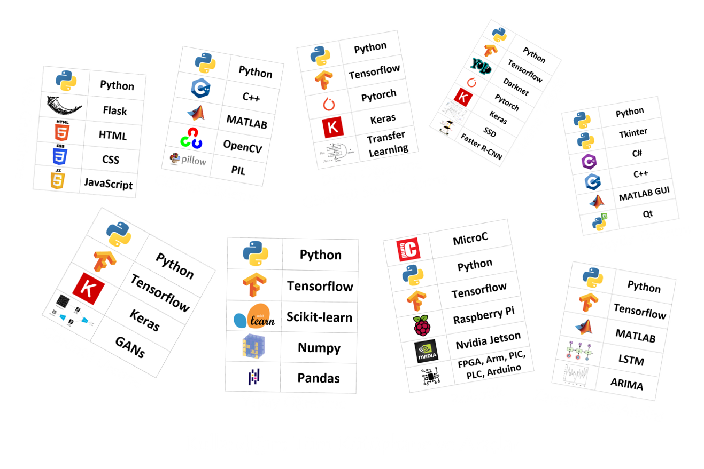

Copyright 2021
Ahmet Haydar Ornek
ahmethaydarornek@gmail.com
English | Türkçe
Hakkımda
Özet olarak derin öğrenme ve görüntü işleme çalışan bir mühendisimBiraz müzikle ilgileniyorum biraz da şiirle

Teorik Olarak
Lisans öğrencisi olduğum dönemde görüntü işleme ve insan-robot etkileşimi üzerine çalıştıktan sonra yüksek lisans döneminde termal görüntüleme ve yapay öğrenme çalıştım. Veri bilimi, lineer cebir, istatistik, yapay öğrenme, derin öğrenme ve görüntü işleme üzerine uzuuun uzun eğitimler alarak dersler verdim.
Pratik Olarak
Birisi bana bir iş verdiği zaman onu hemen yapmaya çalışırım, çocukluktan gelen bir alışkanlık. Ama bu yüzde yüz yapabilirim demek değil baktım yapamıyorum çeşitli eğitimler almaya çalışırım. Lisans döneminden beri kameralarla donatılmış otonom hareket eden örümcek robotlar veya termal görüntülerden hastalık tespiti yapan yazılımlar gibi robotik, görüntü işleme ve derin öğrenme üzerine bir çok proje yaptım. Şu an görüntü sınıflandırma, görüntülerden nesne tespit etme, görüntü üretme ve görüntünün istenen parçasının ayrılması gibi konular üzerine çalışıyorum. Yapay Sinir Ağları, Evrişimli Sinir Ağları, Çekişmeli Üretici Ağlar ve Transfer Öğrenme kullanarak yapıyorum bu işlemleri.

Ne Çalışıyorum?
Derin Öğrenme, Görüntü İşleme (isteyen Bilgisayarlı Görü diyebilir), Robotik, Zaman Serisi AnaliziDerin Öğrenme
Evrişimli Sinir Ağları (CNNs), Bölgesel Evrişimli Sinir Ağları (R-CNNs), Çekişmeli Üretici Ağlar (GANs), Transfer Öğrenme
Görüntü İşleme
Bildiğimiz Görüntüleme, Termal Görüntüleme, Hiperspektral Görüntüleme, Nesne Tespiti, Görüntü Sınıflandırma, Görüntü Üretme, Nesne Takip Etme
Robotik
Nvidia Jetson, Raspberry Pi, Arduino, FPGA, ARM, PLC, PIC, Otonom Kontrol, Kullanıcı Dostu Arayüzler Geliştirilmesi
Zaman Serisi Analizi
Bütünleşik Otoregresif Hareketli Ortalama (ARIMA), Tekrarlamalı Sinir Ağları (RNN), Uzun Kısa Süreli Bellek (LSTM)



{kind=link}
{kind=link}
{kind=link}
{kind=link}